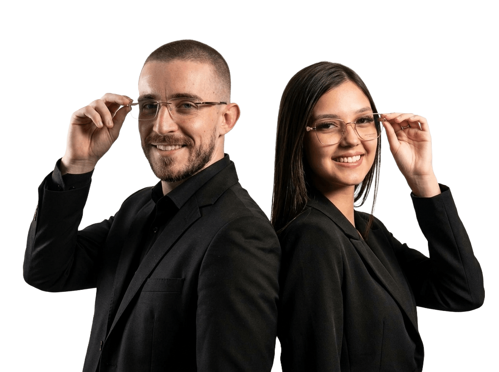

Precisão e estilo em cada detalhe
Seu óculos pronto, rápido e do jeito certo para você
Mais de 1.000 armações + lentes profissionais, com entrega rápida e atendimento direto ao ponto em Mogi das Cruzes.

Especialistas em altas dioptrias
Entrega rápida
Atendimento sem enrolação